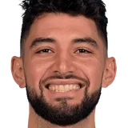

His best final NBA finish was #4 of 30, with the 2025-26 Cleveland Cavaliers. In his 355 games for 1 team over 7 seasons they went 206–149 (58.0%), +57 games over .500, with an average final finish of 14.0. The biggest one-season rise in his career: the Cleveland Cavaliers went from #26 in 2020-21 to #17 in 2021-22.
Final NBA finish, season by season
Title Finals Other playoffs Missed. #1 = champion; the dashed line is last place that season. Each point opens that season's final standings.
All 30 teams ranked in 2025-26, his best finish (#4)Teammate help
 Donovan Mitchell10.03 seasons
Donovan Mitchell10.03 seasons Evan Mobley9.23 seasons
Evan Mobley9.23 seasons Darius Garland2.02 seasons
Darius Garland2.02 seasons
Career
Regular seasons 1946-47 to 2026-27, games through Nov. 17, 2026. Records include 2026-27 to date; season counts and finishes use completed seasons. Each card opens its board. How we count.
Latest completed seasons
- 2025-26
 Cleveland Cavaliers: #4 of 30, 52–30 · Lost conf finals 0–4
Cleveland Cavaliers: #4 of 30, 52–30 · Lost conf finals 0–4  NYK
NYK - 2024-25 Cleveland Cavaliers: #5 of 30, 64–18 · Lost conf semis 1–4
 IND
IND - 2023-24 Cleveland Cavaliers: #7 of 30, 48–34 · Lost conf semis 1–4
 BOS
BOS
2026-27 so far
Games through Nov. 17, 2026, the last game in the nightly data. Not included in the career numbers (completed seasons through 2025-26) until the season ends. No final finish until the season ends.
| Team | His games | With him | Without him | Gap | On/off per 100 | Started / bench | Close games |
|---|---|---|---|---|---|---|---|
| 13 | 10–3 76.9% | 2–0 100.0% | −23.1 | +5.7 | 5–1 / 5–2 | 4–0 |
Season by season
Newest first; every header sorts. Final NBA finish is the team's rank among all teams that season (#1 = champion) and opens that season's standings. "Without him" uses the team-season window; the span line counts only the games between his first and last game for the team.
| 2025-26 | #4 of 30 | 52–30 63.4% | Lost conf finals 0–4 | 59 of 82 | 36–23 61.0% | 16–7 69.6%span: 15–7, gap −7.2 | −8.5 | |
| 2024-25 | #5 of 30 | 64–18 78.0% | Lost conf semis 1–4 | 59 of 82 | 47–12 79.7% | 17–6 73.9%span: 17–5, gap +2.4 | +5.7 | |
| 2023-24 | #7 of 30 | 48–34 58.5% | Lost conf semis 1–4 | 54 of 82 | 36–18 66.7% | 12–16 42.9%span: 4–4, gap +16.7 | +23.8 | |
| 2022-23 | #10 of 30 | 51–31 62.2% | Lost 1st round 1–4 | 44 of 82 | 30–14 68.2% | 21–17 55.3%span: 21–17, gap +12.9 | +12.9 | |
| 2021-22 | #17 of 30 | 44–38 53.7% | Lost play-in | 51 of 82 | 27–24 52.9% | 17–14 54.8%span: 11–4, gap −20.4 | −1.9 | |
| 2020-21 | #26 of 30 | 22–50 30.6% | Missed | 63 of 72 | 19–44 30.2% | 3–6 33.3%span: 3–6, gap −3.2 | −3.2 | |
| 2019-20 | #29 of 30 | 19–46 29.2% | Missed | 12 of 65 | 1–11 8.3% | 18–35 34.0%span: 12–26, gap −23.2 | −25.6 |
On/off, starts and close games
From the lineup data, 1996-97 on. On/off is net points per 100 possessions with him on the floor minus off, a different unit from the win-rate gaps. Started and off the bench are team records in those games; close games are those within 5 points in the last 5 minutes with him on the floor.
| 2025-26 | +5.8 | 24–14 63.2% | 12–9 57.1% | 7–9 43.8% | |
| 2024-25 | +4.0 | 23–7 76.7% | 24–5 82.8% | 10–1 90.9% | |
| 2023-24 | +7.0 | 21–11 65.6% | 15–7 68.2% | 6–4 60.0% | |
| 2022-23 | −2.8 | 10–3 76.9% | 20–11 64.5% | 8–3 72.7% | |
| 2021-22 | +0.3 | 15–13 53.6% | 12–11 52.2% | 6–6 50.0% | |
| 2020-21 | −0.8 | 8–11 42.1% | 11–33 25.0% | 3–7 30.0% | |
| 2019-20 | +14.6 | N/A | 1–11 8.3% | N/A |
Teammate help by season
Help = Teammates Score points for honors won that season by teammates who shared a game with him. How help works.
- 2025-26Cleveland Cavaliers
No honored teammate
Entering help and the other teammates
Entering the season: 17.0+ · from Evan Mobley (8.0), Donovan Mitchell (5.0), James Harden (3.0), Darius Garland (1.0)
No honors that season: Donovan Mitchell 52 g, Jaylon Tyson 50 g, Evan Mobley 47 g, Craig Porter 45 g, Nae'Qwan Tomlin 43 g, Thomas Bryant 43 g, Jarrett Allen 39 g, Tyrese Proctor 35 g, Sam Merrill 35 g, De'Andre Hunter 35 g, Lonzo Ball 30 g, Larry Nance Jr 26 g, Darius Garland 19 g, Dennis Schroeder 17 g and 9 more
- 2024-25Cleveland Cavaliers
Evan Mobley DPOYAll-NBA 2ndAll-StarAll-Def 1st49 gDonovan Mitchell All-NBA 1stAll-Star50 gDarius Garland All-Star55 g
Entering help and the other teammates
Entering the season: 1.0
No honors that season: Jarrett Allen 59 g, Sam Merrill 52 g, Ty Jerome 51 g, Isaac Okoro 46 g, Max Strus 37 g, Georges Niang 35 g, Craig Porter 32 g, Caris LeVert 31 g, Jaylon Tyson 30 g, Tristan Thompson 29 g, De'Andre Hunter 22 g, Javonte Green 15 g, JT Thor 7 g, Luke Travers 4 g and 3 more
- 2023-24Cleveland Cavaliers
Donovan Mitchell All-Star39 g
Entering help and the other teammates
Entering the season: 5.0 · from Evan Mobley (1.0)
No honors that season: Georges Niang 54 g, Max Strus 51 g, Jarrett Allen 50 g, Isaac Okoro 46 g, Caris LeVert 43 g, Sam Merrill 42 g, Craig Porter 35 g, Tristan Thompson 33 g, Darius Garland 30 g, Evan Mobley 29 g, Damian Jones 25 g, Emoni Bates 9 g, Pete Nance 2 g, Isaiah Mobley 2 g and 1 more
- 2022-23Cleveland Cavaliers
Donovan Mitchell All-NBA 2ndAll-Star36 gEvan Mobley All-Def 1st43 g
Entering help and the other teammates
Entering the season: 3.2 · from Jarrett Allen (1.0), Darius Garland (1.0)
No honors that season: Cedi Osman 42 g, Isaac Okoro 39 g, Caris LeVert 37 g, Jarrett Allen 36 g, Darius Garland 35 g, Raul Neto 29 g, Lamar Stevens 28 g, Robin Lopez 23 g, Ricky Rubio 22 g, Kevin Love 14 g, Mamadi Diakite 12 g, Danny Green 8 g, Isaiah Mobley 8 g, Sam Merrill 4 g and 1 more
- 2021-22Cleveland Cavaliers
 Jarrett Allen All-Star40 gDarius Garland All-Star38 gEvan Mobley All-Rookie 1st43 g
Jarrett Allen All-Star40 gDarius Garland All-Star38 gEvan Mobley All-Rookie 1st43 g
Entering help and the other teammates
Entering the season: 0.1 · from Isaac Okoro (0.1)
No honors that season: Kevin Love 43 g, Cedi Osman 42 g, Isaac Okoro 39 g, Lamar Stevens 35 g, Dylan Windler 30 g, Lauri Markkanen 30 g, Ricky Rubio 24 g, Ed Davis 20 g, Kevin Pangos 20 g, Brandon Goodwin 20 g, Denzel Valentine 18 g, Rajon Rondo 15 g, Tacko Fall 11 g, RJ Nembhard 10 g and 8 more
- 2020-21Cleveland Cavaliers
 Isaac Okoro All-Rookie 2nd58 g
Isaac Okoro All-Rookie 2nd58 g
Entering help and the other teammates
Entering the season: 0
No honors that season: Collin Sexton 51 g, Cedi Osman 51 g, Darius Garland 46 g, Jarrett Allen 43 g, Damyean Dotson 39 g, Lamar Stevens 37 g, Larry Nance Jr 31 g, Brodric Thomas 28 g, JaVale McGee 27 g, Dylan Windler 25 g, Kevin Love 23 g, Taurean Prince 23 g, Andre Drummond 20 g, Mfiondu Kabengele 16 g and 9 more
- 2019-20Cleveland Cavaliers
No honored teammate
Entering help and the other teammates
Entering the season: 0.1 · from Collin Sexton (0.1)
No honors that season: Collin Sexton 12 g, Cedi Osman 12 g, Kevin Love 10 g, Matthew Dellavedova 9 g, Tristan Thompson 9 g, Darius Garland 9 g, Alfonzo McKinnie 9 g, Kevin Porter 8 g, Larry Nance Jr 8 g, Ante Zizic 7 g, Dante Exum 6 g, John Henson 5 g, Brandon Knight 5 g, Tyler Cook 5 g and 4 more
Compare with a peer
 Dean Wade vs Aaron NesmithCareers centered on 2022-23 and 2022-23; help 3.2 and 3.1 points per season; own honors 0.0 and 0.0 per season; 342 and 333 games.
Dean Wade vs Aaron NesmithCareers centered on 2022-23 and 2022-23; help 3.2 and 3.1 points per season; own honors 0.0 and 0.0 per season; 342 and 333 games.- Dean Wade vs Amir CoffeyCareers centered on 2022-23 and 2022-23; help 3.2 and 3.4 points per season; own honors 0.0 and 0.0 per season; 342 and 369 games.
 Dean Wade vs Jalen SmithCareers centered on 2022-23 and 2023-24; help 3.2 and 3.1 points per season; own honors 0.0 and 0.0 per season; 342 and 324 games.
Dean Wade vs Jalen SmithCareers centered on 2022-23 and 2023-24; help 3.2 and 3.1 points per season; own honors 0.0 and 0.0 per season; 342 and 324 games.
Record against each opponent
- Most playoff series against one franchise: 2 against the New York Knicks, 0–2 in series and 0–6 in games.
Regular season, completed seasons: 342 games, 196–146, against 29 franchises. Grouped by franchise (named as today); game lists keep each team's name that season.
| Games list | |||||||
|---|---|---|---|---|---|---|---|
| 18 | 8–10 | 44.4% | −2 | 0–1 (0–3 in games) | 2019-20 to 2025-26 | ||
| 18 | 13–5 | 72.2% | +8 | N/A | 2020-21 to 2025-26 | ||
| 18 | 11–7 | 61.1% | +4 | N/A | 2020-21 to 2025-26 | ||
| 18 | 9–9 | 50.0% | 0 | 0–2 (0–6 in games) | 2019-20 to 2025-26 | ||
| 18 | 11–7 | 61.1% | +4 | N/A | 2020-21 to 2025-26 | ||
| 17 | 12–5 | 70.6% | +7 | N/A | 2020-21 to 2025-26 | ||
| 17 | 12–5 | 70.6% | +7 | 1–0 (4–3 in games) | 2019-20 to 2025-26 | ||
| 17 | 10–7 | 58.8% | +3 | 0–1 (1–4 in games) | 2020-21 to 2025-26 | ||
| 17 | 12–5 | 70.6% | +7 | N/A | 2020-21 to 2025-26 | ||
| 15 | 8–7 | 53.3% | +1 | 1–0 (4–3 in games) | 2020-21 to 2025-26 | ||
| 13 | 6–7 | 46.2% | −1 | N/A | 2020-21 to 2025-26 | ||
| 13 | 8–5 | 61.5% | +3 | N/A | 2020-21 to 2025-26 | ||
| 11 | 8–3 | 72.7% | +5 | N/A | 2020-21 to 2025-26 | ||
| 11 | 5–6 | 45.5% | −1 | N/A | 2019-20 to 2025-26 | ||
| 11 | 3–8 | 27.3% | −5 | 1–0 (4–0 in games) | 2019-20 to 2025-26 | ||
| 10 | 3–7 | 30.0% | −4 | N/A | 2019-20 to 2025-26 | ||
| 10 | 4–6 | 40.0% | −2 | N/A | 2020-21 to 2025-26 | ||
| 9 | 5–4 | 55.6% | +1 | N/A | 2020-21 to 2025-26 | ||
| 9 | 4–5 | 44.4% | −1 | N/A | 2019-20 to 2025-26 | ||
| 9 | 6–3 | 66.7% | +3 | N/A | 2020-21 to 2025-26 | ||
| 9 | 8–1 | 88.9% | +7 | N/A | 2020-21 to 2025-26 | ||
| 8 | 4–4 | 50.0% | 0 | N/A | 2019-20 to 2025-26 | ||
| 8 | 4–4 | 50.0% | 0 | N/A | 2020-21 to 2025-26 | ||
| 8 | 6–2 | 75.0% | +4 | N/A | 2020-21 to 2025-26 | ||
| 7 | 4–3 | 57.1% | +1 | N/A | 2019-20 to 2025-26 | ||
| 7 | 2–5 | 28.6% | −3 | N/A | 2020-21 to 2025-26 | ||
| 6 | 4–2 | 66.7% | +2 | N/A | 2020-21 to 2024-25 | ||
| 6 | 3–3 | 50.0% | 0 | N/A | 2019-20 to 2024-25 | ||
| 4 | 3–1 | 75.0% | +2 | N/A | 2021-22 to 2024-25 |
Rows add up to his career record in his games. A playoff series counts when he played in it; early round-robin games show as games only. How we count.
Playoffs, with and without him
| 2025-26 | Lost conference finals to | #4 of 30 | 18 of 18 | 8–10 44.4% | N/A | N/A | |
| 2024-25 | Lost conference semifinals to | #5 of 30 | 9 of 9 | 5–4 55.6% | N/A | N/A | |
| 2023-24 | Lost conference semifinals to | #7 of 30 | 3 of 12 | 0–3 0.0% | 5–4 55.6% | −55.6 | |
| 2022-23 | Lost first round to | #10 of 30 | 2 of 5 | 0–2 0.0% | 1–2 33.3% | −33.3 |
Arrival and departure
Team wins per 82 games the season before he arrived vs his first season there, and his last season vs the season after he left. Per 82 so short seasons compare fairly. These are team records, not a measure of what he did.
| Arrived | 2019-20 | 2018-19: 19–63 19.0 per 82 | 2019-20: 19–46 24.0 per 82 | +5.0 wins |
Best duos
Team record in regular-season games both played, top 10 by win %, at least 50 games together.

Ty Jerome 41–11 78.8% Georges Niang
66–23 74.2%
Georges Niang
66–23 74.2% Sam Merrill
98–35 73.7%
Sam Merrill
98–35 73.7% Caris LeVert
83–32 72.2%
Caris LeVert
83–32 72.2% Craig Porter
79–33 70.5%
Craig Porter
79–33 70.5% Max Strus
67–28 70.5%
Max Strus
67–28 70.5%- Donovan Mitchell
123–54 69.5%
- Evan Mobley
142–69 67.3%
 Jaylon Tyson
53–27 66.2%
Jaylon Tyson
53–27 66.2% Tristan Thompson
45–26 63.4%
Tristan Thompson
45–26 63.4%